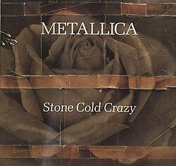
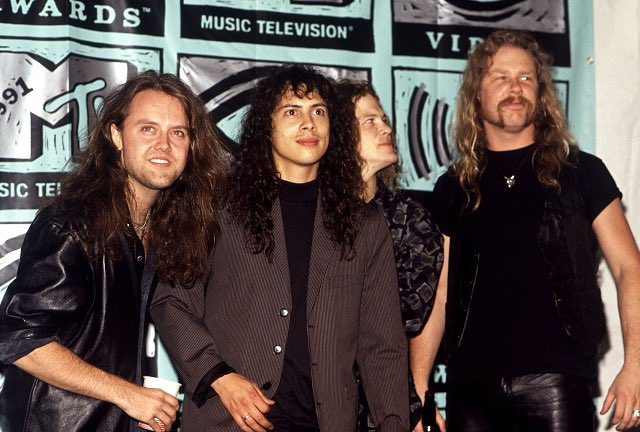

A Stone Cold Crazy eredetileg a Queen 1974-es Sheer Heart Attack albumán jelent meg. A dal rendkívül gyors tempója és agresszív hangzása miatt sokan a thrash metal egyik korai előfutárának tekintik.
A Metallica 1990-ben készítette el saját feldolgozását a dalból. A zenekar hű maradt az eredeti szerkezethez, ugyanakkor még keményebb gitárhangzással és nagyobb intenzitással adta elő a számot.
A feldolgozás hatalmas sikert aratott, és 1991-ben elnyerte a Best Metal Performance Grammy-díjat. Ez volt a Metallica második Grammy-győzelme, közvetlenül a One sikere után.
A dal különleges helyet foglal el a Metallica történetében, hiszen egyszerre tisztelgés a Queen előtt és bizonyítéka annak, hogy a zenekar képes volt saját stílusára formálni egy klasszikus rockdalt.
A Stone Cold Crazy Grammy-díja tovább erősítette a Metallica helyét a metal világ élvonalában, és megmutatta, hogy a zenekar nemcsak saját szerzeményeivel, hanem feldolgozásaival is képes kiemelkedő sikereket elérni.


